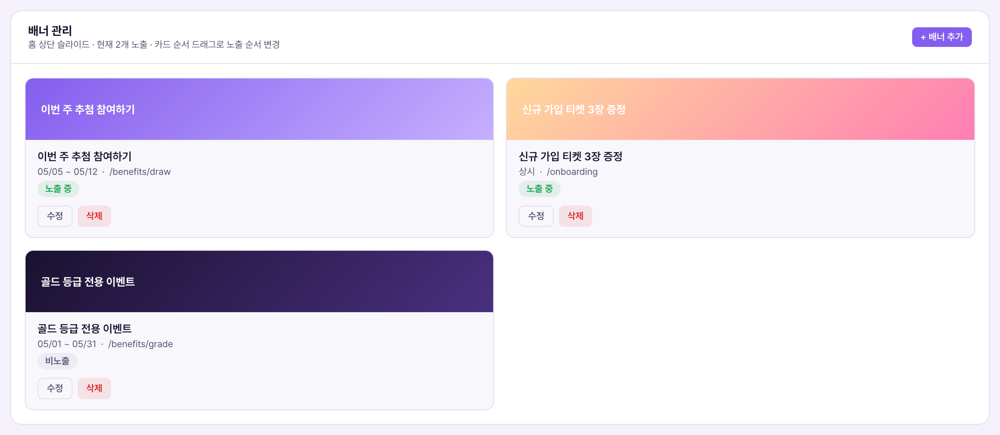
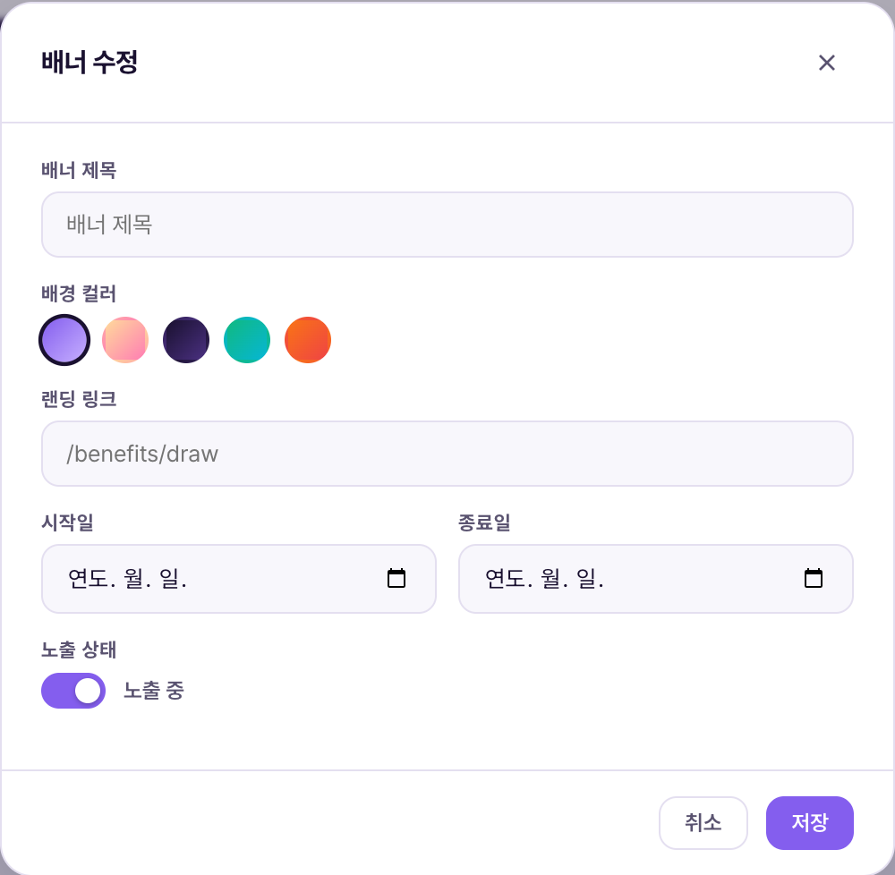

1. 한 줄 정의1. Định nghĩa một dòng
배너 관리는 앱 홈 화면 맨 위에 뜨는 카드형 슬라이드(배너)를 등록·수정·삭제하고, 지금 노출할지 말지를 켜고 끄는 화면입니다. 배너는 회원이 앱을 열자마자 가장 먼저 보는 자리라, 신규 이벤트·프로모션·공지를 빠르게 알리는 용도로 씁니다. 실제 노출 여부는 아래 4번에서 설명하듯 오직 "노출 상태" 토글 하나로 결정됩니다.Quản lý banner là màn hình đăng ký·sửa·xóa các banner dạng thẻ hiển thị trên cùng màn Home của app, và bật/tắt việc hiển thị ngay bây giờ. Banner là vị trí đầu tiên hội viên nhìn thấy khi mở app, nên dùng để thông báo nhanh sự kiện·khuyến mãi·thông báo mới. Việc có hiển thị hay không chỉ do đúng một toggle "Trạng thái hiển thị" quyết định, như mục 4 bên dưới giải thích.
2. CMS 화면 구성2. Cấu trúc màn hình CMS

캡처 시점 데모에는 배너 2개가 등록돼 있지만 제목과 랜딩 링크가 비어 있는 테스트 데이터라 카드에 글자가 보이지 않습니다. 배경 그러데이션·"상시" 기간 표시·"비노출" 배지·수정/노출 전환/삭제 버튼 등 화면 요소 자체는 실제 그대로입니다.Tại thời điểm chụp, demo có sẵn 2 banner nhưng là dữ liệu test còn trống tiêu đề và link đích nên thẻ không hiện chữ. Các thành phần màn hình như gradient nền · nhãn kỳ hạn "Thường xuyên" · badge "Không hiển thị" · nút Sửa/Chuyển đổi hiển thị/Xóa đều là màn thật.


| 요소Thành phần | 의미Ý nghĩa | 바꾸면 생기는 일Điều gì xảy ra khi thay đổi |
|---|---|---|
| 배너 제목Tiêu đề banner | 카드 안에 표시되는 문구Câu chữ hiển thị trong thẻ | 필수값 — 비워두고 저장하면 "배너 제목을 입력하세요" 경고만 뜨고 저장되지 않음Bắt buộc — nếu để trống và lưu chỉ hiện cảnh báo "Nhập tiêu đề banner" và không lưu được |
| 배경 컬러Màu nền | 5가지 그러데이션 프리셋 중 선택Chọn 1 trong 5 gradient dựng sẵn | 카드 배경이 즉시 바뀜. 직접 컬러 입력은 불가 — 프리셋 5종 중에서만 선택Nền thẻ đổi ngay. Không thể nhập màu tùy ý — chỉ chọn trong 5 preset có sẵn |
| 랜딩 링크Link đích | 배너를 눌렀을 때 이동할 앱 내 경로 (예: /benefits/draw)Đường dẫn trong app khi nhấn vào banner (vd: /benefits/draw) | 비워도 저장은 되지만, 회원이 배너를 눌러도 아무 데도 이동하지 않게 됨Vẫn lưu được dù để trống, nhưng khi hội viên nhấn banner sẽ không chuyển đi đâu cả |
| 시작일 · 종료일Ngày bắt đầu · Ngày kết thúc | 운영자가 참고하는 노출 예정 기간Kỳ hạn dự kiến hiển thị để vận hành viên tham khảo | 저장은 되지만 소스 코드(bnSubmit) 기준으로 날짜가 지나도 자동으로 비노출 처리되지 않음 — 실제 끄고 켜는 건 아래 "노출 상태" 토글뿐(확인됨: bnToggle 함수). 기간이 끝나면 운영자가 직접 꺼야 함Vẫn lưu nhưng theo mã nguồn (bnSubmit), qua ngày kết thúc KHÔNG tự động ẩn — chỉ có toggle "Trạng thái hiển thị" bên dưới quyết định bật/tắt thật sự (đã xác nhận qua hàm bnToggle). Hết kỳ hạn thì vận hành viên phải tự tắt |
| 노출 상태 토글Toggle trạng thái hiển thị | 배너를 지금 홈 화면에 보여줄지 결정하는 유일한 스위치Công tắc duy nhất quyết định banner có hiện trên Home ngay bây giờ hay không | 켜면 "노출 중" 배지로 바뀌고 홈 슬라이드에 포함, 끄면 "비노출"로 바뀌고 홈에서 사라짐(즉시 반영)Bật thì đổi badge "Đang hiển thị" và vào slide Home, tắt thì đổi "Không hiển thị" và biến khỏi Home (áp dụng ngay lập tức) |
3. 동작 로직 — 저장하면 실제로 무슨 일이 생기나3. Logic hoạt động — Lưu xong thì điều gì thực sự xảy ra
"수정" 클릭Bấm "+ Thêm banner" hoặc
"Sửa" trên thẻ
노출 상태 입력Nhập tiêu đề·màu·link·
kỳ hạn·trạng thái hiển thị
Firestore banners 컬렉션에 즉시 기록Bấm "Lưu" →
ghi ngay vào collection banners trên Firestore
홈 화면에도 즉시 반영Danh sách tự tải lại,
Home cũng cập nhật ngay
"노출 전환" 버튼은 모달을 열지 않고 그 자리에서 바로 status 값만 active↔inactive로 뒤집습니다(확인됨: bnToggle 함수 — db.collection("banners").doc(id).update(...)). 저장·삭제·노출전환 세 가지 조작 모두 실제 데이터베이스에 즉시 반영되는 진짜 동작이며, 화면에만 보이는 가짜 토스트가 아닙니다.Nút "Chuyển đổi hiển thị" không mở modal mà đảo giá trị status active↔inactive ngay tại chỗ (đã xác nhận qua hàm bnToggle — db.collection("banners").doc(id).update(...)). Cả ba thao tác lưu·xóa·chuyển đổi hiển thị đều ghi thẳng vào database thật, không phải toast giả trên màn hình.
4. 운영 시나리오4. Kịch bản vận hành
| 상황Tình huống | 운영자가 하는 일Việc vận hành viên làm | 결과Kết quả |
|---|---|---|
| 신규 이벤트 오픈Mở sự kiện mới | "+ 배너 추가" → 제목·컬러·랜딩 링크(예: /benefits/draw) 입력 → 노출 상태 ON → 저장"+ Thêm banner" → nhập tiêu đề·màu·link đích (vd: /benefits/draw) → bật trạng thái hiển thị → Lưu | 저장 즉시 홈 상단 슬라이드 맨 앞(또는 드래그한 위치)에 노출Hiển thị ngay ở đầu (hoặc vị trí đã kéo) slide Home ngay khi lưu |
| 행사 종료Kết thúc sự kiện | 해당 배너 카드의 "노출 전환" 클릭Bấm "Chuyển đổi hiển thị" trên thẻ banner đó | 배지가 "비노출"로 바뀌고 홈에서 즉시 사라짐. 카드·데이터는 삭제되지 않고 남아 있어 재사용 가능Badge đổi thành "Không hiển thị" và biến khỏi Home ngay. Thẻ·dữ liệu không bị xóa, vẫn còn để dùng lại |
| 오탈자·링크 오류 발견Phát hiện lỗi chính tả·link sai | "수정" → 필드 정정 → 저장"Sửa" → sửa lại field → Lưu | 같은 배너 문서(id)를 그대로 덮어씀(merge 저장) — 새 카드가 추가되는 게 아님Ghi đè lên đúng document (id) đó (lưu kiểu merge) — không tạo thêm thẻ mới |
| 완전히 안 쓰는 배너 정리Dọn banner không dùng nữa | "삭제" → 확인 팝업에서 재확인"Xóa" → xác nhận lại ở popup | Firestore 문서 자체가 삭제되어 복구 불가. 잠깐 숨기고 싶을 땐 삭제 대신 "노출 전환"을 쓸 것Document trên Firestore bị xóa hẳn, không khôi phục được. Nếu chỉ muốn ẩn tạm thì dùng "Chuyển đổi hiển thị" thay vì Xóa |